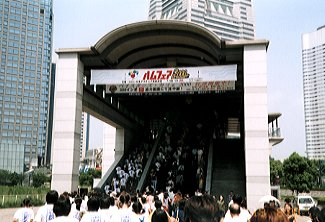
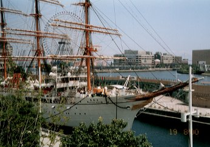
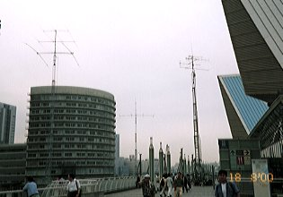
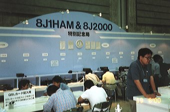
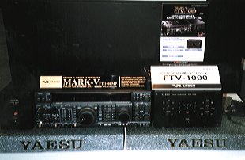
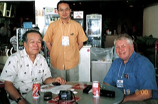
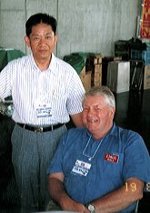
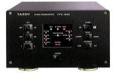
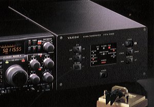

横浜・桜木町駅からランドマーク・タワーに通じる"動く歩道"の入り口
途中、右手に日本最大の帆船「日本丸」が係留されていた。
(左下)展示場と道路との間に3基(1階と2階)のアンテナタワーが建っている


(右)お馴染みの記念局・8J1HAMとミレニアム記念局・8J2000


50MHzトランスバーター・FTV-1000で注目されたYAESUのブース。


IOTAと2001年のDXpeditionの打ち合わせで来日したG3NUG・Neville
左からJA1RJU、JQ1HBT、G3NUG
(右)N2ATT/JA3AER・荒川さんとG3NUG
|
◎ FTV-1000 待望の50MHzトランスバーター、遂に登場！ 今年のハムフェアで"6mファン"の注目を集めていたのは、何と言ってもYAESUからMARK-V FT-1000MP専用として"参考出品"された50MHzのトランスバーター・FTV-1000だ。 FTV-1000はファイナル段にMARK-Vと同じMOS FET BLF147を使用したプッシュプル構成で、50MHz帯で200WPEPのハイパワーを実現している。 ファイナル段のA級動作も可能で、この動作時には50Wの最大出力となる。受信部のフロントエンドにはMARK-Vと同様にJ-FET×4のダブルバランスドミキサー。 RFアンプ部はSST-310×4によるハイダイナミックレンジ型アンプに加え、3SK131による高感度アンプの2種類のRFアンプから構成されていて、 これをフロントパネルからコントロール出来るようになっている。 以上はカタログでの説明だが、実際に動作状態でのテストは出来なかったものの、親機がMARK-V FT-1000MPと言うこともあり、 6mに於いてもかなりの性能が期待される。FTV-1000は電源にMARK-Vと同じ30Vの高電圧が必要となり、 今のところは他機との接続は考慮されていない。 FTV-1000のフロントパネルは、写真の様に何の変哲もないシンプルなものだが、トランスバーターとして必要な動作状態を把握するのは容易。 50MHz帯に切り替えた時には、親機の周波数表示は正(A)、副(B)共に「50MHz」に切り替わるため、 動作時には、MARK-V FT-1000MPに50MHz帯が内蔵された様な"錯覚"を覚える。 気になる価格は今のところ"参考出品"の段階なので発売時期と共に未定だが、"10万円前後"になりそう？とのこと。   FTV-1000のフロントパネル。左側の切り替えスイッチは上から、ATTのON/OFF、IPOの ON/OFF、RF AMPの切り替え。 右側は上からAB/A動作の切り替え、BAND LOW/UPの切り替え、ANT切り替えの順。 |